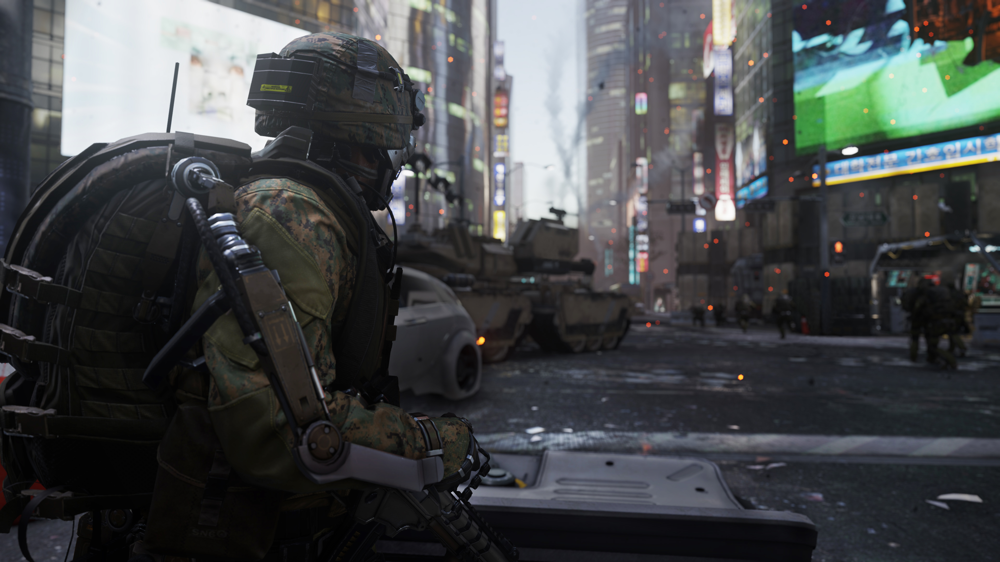
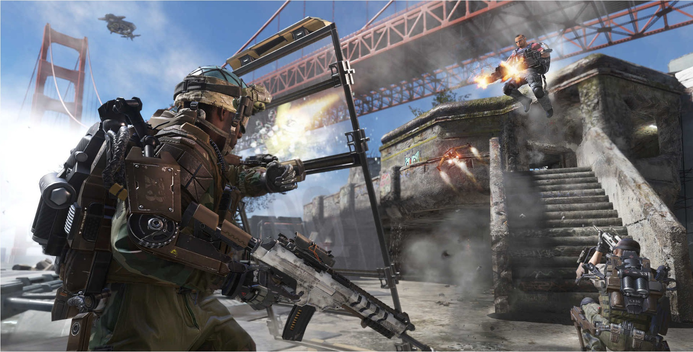
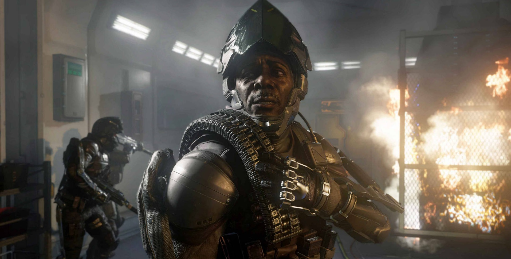
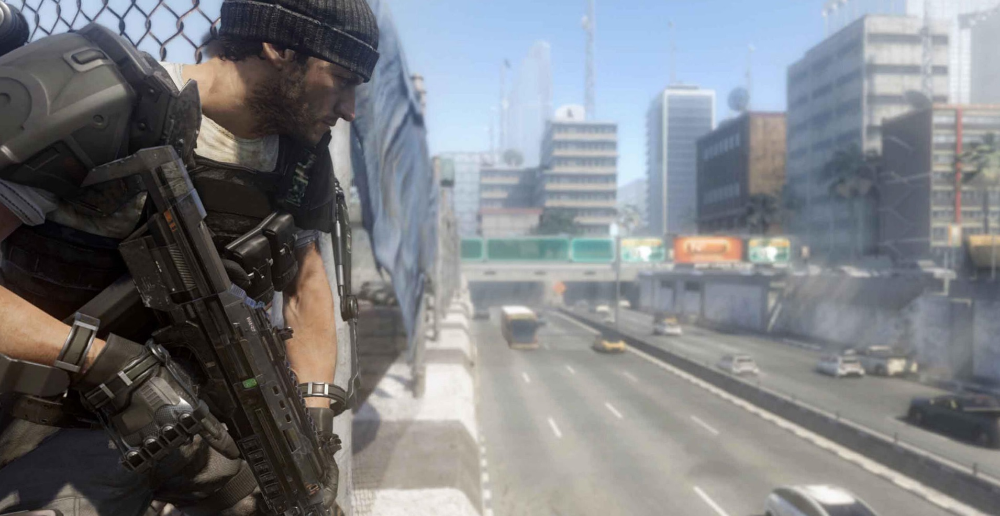

Call of Duty: Advanced Warfare
Call of Duty: Advanced Warfare is an upcoming 2014 first-person shooter video game developed by Sledgehammer Games and published by Activision. It is the eleventh primary installment in the Call of Duty series and the first developed primarily by Sledgehammer Games, after Neversoft was merged into Infinity Ward on May 3, 2014 and was then officially made defunct on July 10, 2014. The game is set to be released for Microsoft Windows, PlayStation 3, PlayStation 4, Xbox 360 and Xbox One on November 4, 2014. Also, a Day Zero Edition of Call of Duty: Advanced Warfare is set to release in North America a day before the classic game. It will feature double XP for the first day and two exclusive guns. It was announced that Sledgehammer Games will not be developing Advanced Warfare for the PlayStation 3 and Xbox 360, and that High Moon Studios would be developing the PlayStation 3 and Xbox 360 editions. Advanced Warfare is the first game in the series to be created in a three-year development cycle, rather than two years as in previous Call of Duty games. It will be the first main series Call of Duty game to not see a release on Nintendo platforms since Call of Duty: Modern Warfare 2.
In the mid-21st century, terrorists simultaneously attack nuclear reactors in North America, South America, Africa, Europe and Asia, throwing governments across the world into turmoil and crippling defenses. As a result, the United States enlists the help of the Atlas Corporation, a private military company led by Jonathan Irons, to fight on their behalf, as well as to assist in reconstruction.
Harnessing the power of next-gen platforms, Call of Duty: Advanced Warfare brings players into the battlegrounds of the future by boasting a new hi-tech, advanced arsenal and ability set, arming players with all-new equipment, technology, perks, and vehicles like hoverbikes and highly specialized drones. Players can also choose between standard ammunition and an all-new class of directed-energy weaponry that enables totally new gameplay dynamics. Additionally, with exoskeletons delivering a massive force multiplier and unprecedented tactical freedom, Call of Duty: Advanced Warfare evolves every firefight.
Powerful exoskeletons evolve every aspect of a soldier’s battle readiness, enabling combatants to deploy with an advanced lethality and eliminating the need for specialization. The introduction of this gameplay mechanic delivers enhanced player movement and verticality through boost jumps and grappling, covert cloaking abilities, and biomechanics that provide unparalleled strength, awareness, endurance, and speed. With the advent of the exoskeleton and newly advanced armor and weaponry, every soldier commands tactical freedom in any terrain unlike ever before, fundamentally changing the way gamers play Call of Duty across all modes.
Advance Warfare multiplayer also marks the returns of serval old mechanics, with one being the Black Ops II Pick-10 Create-A-Class system, however in Advance Warfare it's a Pick-13 system due to the fact that Scorestreaks will be part of the Create-A-Class. Ghosts' combat slide has also returned. Some new feature to the gameplay are that Scorestreaks can now also be customized, giving them new features but increasing the amount of points required to earn said reward. There is a new reward system that grants supply drops upon achieving tasks. When used they grant the player 3 items of different rarity: Enlist (common), Professional (uncommon), and Elite (rare). The items range from custom weapons and player customization items to special care packages called Reinforcements, which can give the player a scorestreak, or 2 free random perks till the end of the match.